Code
# Plot Timeseries of all 3 variables
autoplot(var_data, facets = T) + labs(title = "Correlation Time Series Plots")+theme_bw()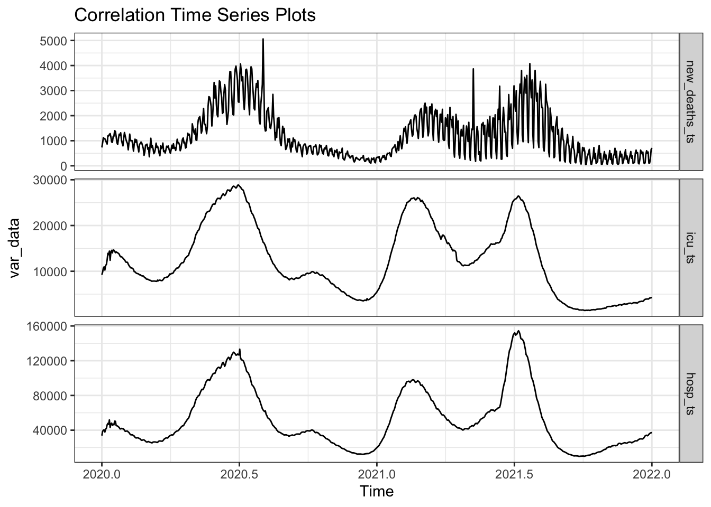
In this section, I will use the VAR model to examine the relationship between the daily number of newly confirmed COVID-19 deaths and the number of ICU patients and the number of hospital patients, and use the ARIMAX model to examine the relationship between the daily number of newly confirmed COVID-19 cases and the number of vaccinated people. relationships and try to create effective predictive models.
I synthesizes findings from three critical studies that investigate the rate of Intensive Care Unit (ICU) admissions and outcomes among patients with coronavirus, as well as factors associated with ICU mortality in COVID-19 patients:
Abate, et al (2020) did a systematic review and meta-analysis aimed to understand the rate of Intensive Care Unit (ICU) admissions and outcomes among coronavirus patients. Their study synthesized data from various observational studies to provide a global perspective on the critical care aspects of COVID-19. It emphasized the variability in ICU admission rates and highlighted the significant factors influencing patient outcomes in ICUs, such as healthcare system capabilities, patient demographics, and infection severity (Abate, S. M., Ahmed Ali, S., Mantfardo, B., & Basu, B., 2020).
Lavrentieva, A., et al (2023) conducted an observational study, with a critical review of the literature to identify factors associated with ICU mortality in COVID-19 patients. Through analyzing patient data, the research identified key predictors of mortality within ICU environments, such as comorbidities, age, and treatment modalities. The study’s findings provide valuable insights for healthcare practitioners in understanding and predicting the risk factors for mortality among critically ill COVID-19 patients (Lavrentieva, A., Kaimakamis, E., Voutsas, V., & Bitzani, M., 2023).
Kowsar, R., et al (2023), their article presents a meta- and network analysis to assess the risk of mortality in COVID-19 patients. Combining data from various sources, the study offers a comprehensive view of the factors contributing to patient outcomes during the pandemic. It highlights the complexity of managing COVID-19, particularly in critical care settings, and underscores the importance of understanding various factors, including patient demographics and comorbidities, in determining patient outcomes (Kowsar, R., Rahimi, A. M., Sroka, M., Mansouri, A., Sadeghi, K., Bonakdar, E., Kateb, S. F., & Mahdavi, A. H., 2023).
The ongoing COVID-19 pandemic has prompted extensive research into the impact of vaccination on the spread and severity of the virus. This literature review synthesizes findings from recent studies to understand better the correlation between daily new COVID-19 cases and vaccination:
A global study emphasized the effectiveness of COVID-19 vaccination in reducing new cases and deaths. This research, analyzing global vaccine data, concluded that while vaccination significantly curtails the spread and fatality rates of COVID-19, the inequitable distribution of vaccines across countries poses a significant challenge (Global Vaccine Data Analysis, PubMed). This study’s findings are crucial in understanding the global dynamics of vaccine impact on COVID-19 cases (Li Z, Liu X, Liu M, Wu Z, Liu Y, Li W, Liu M, Wang X, Gao B, Luo Y, Li X, Tao L, Wang W, Guo X., 2021).
Focusing on the United States, a study in Nature explored the impact of vaccination across various states. It reported no significant correlation between pre-vaccination growth rates and vaccination rates, suggesting a consistent effectiveness of vaccines across different demographics and geographical areas. This research implies that the effectiveness of COVID-19 vaccines is relatively uniform, regardless of variations in states’ demographic and political characteristics (Chen, X., Huang, H., Ju, J. et al., 2022).
Another research investigated the correlation between COVID-19 vaccine coverage rates and hospitalization on a global scale. This study found a direct relationship between vaccine coverage and the number of hospital and ICU patients, indicating that higher vaccination rates correlate with lower hospitalization rates (Huang C, Yang L, Pan J, Xu X, Peng R., 2022).
Mathematical modeling studies have also contributed significantly to this topic. Various studies assessed the effectiveness of vaccines, the impact on COVID-19 case numbers, and the role of vaccination in conjunction with non-pharmaceutical interventions. These models provide a predictive insight into the impact of vaccination strategies and their potential to control the pandemic (Moore, S., Hill, E.M., Dyson, L. et al., 2022).
Lastly, an analysis by Johns Hopkins University revealed a significant negative correlation between vaccination coverage and the incidence and mortality rates of COVID-19 in U.S. counties. This study highlighted the disparities in vaccination uptake and the impact of COVID-19 across different county demographics, such as political affiliation, land use, and socioeconomic status (Ensheng Dong and Lauren Gardner, 2021).
In conclusion, the reviewed literature consistently indicates that COVID-19 vaccination is effective in reducing new cases and deaths. While the impact varies globally due to differences in vaccine distribution and uptake, the overall trend underscores the critical role of vaccination in controlling the pandemic. The variations observed in different regions and among various demographics also point to the need for tailored vaccination strategies and equitable vaccine distribution to maximize public health benefits.
# Plot Timeseries of all 3 variables
autoplot(var_data, facets = T) + labs(title = "Correlation Time Series Plots")+theme_bw()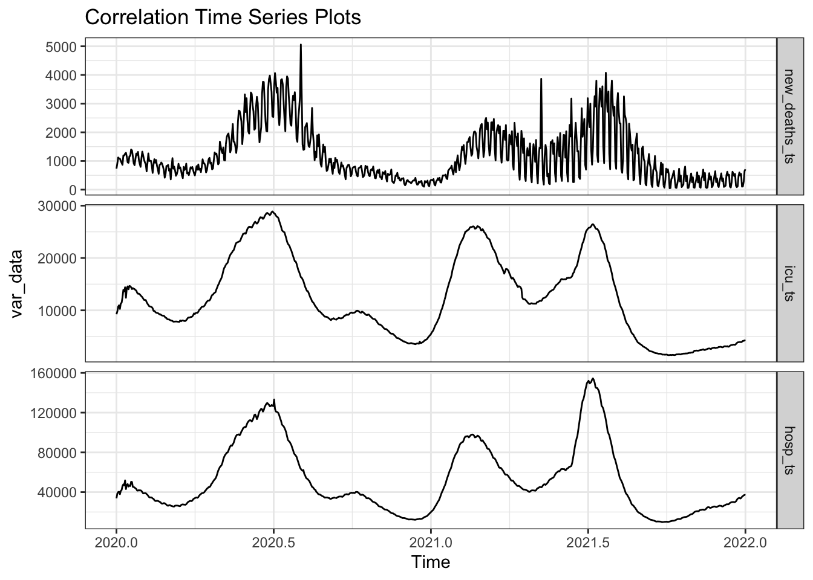
# Plot Pairs
pairs(cbind(New_Deaths=new_deaths_ts, ICU_Patients=icu_ts, Hospital_Patients=hosp_ts))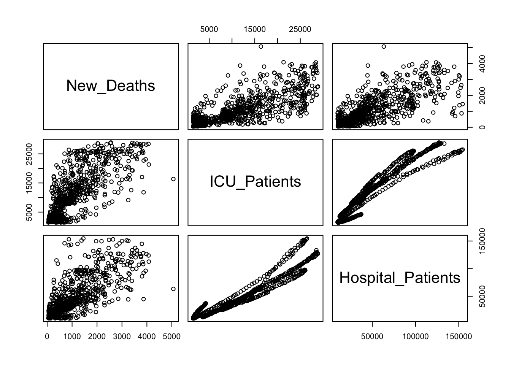
The “icu_ts” plot shows fluctuations similar to “new_deaths_ts” but with less pronounced peaks, suggesting that ICU admissions follow a similar trend as deaths but might not correlate perfectly. The “hosp_ts” plot likely shows the number of hospital patients over time, which, like the ICU data, exhibits waves of increases and decreases. The pattern might follow a similar trend to the ICU and death data, potentially with a lead time as hospital admissions typically precede ICU admissions and deaths.
The scatterplot between “New_Deaths” and “ICU_Patients” might show a positive correlation, indicated by the clustering of points along an upward trajectory. This suggests that as ICU admissions increase, the number of deaths also increases, which is expected as more severe cases lead to higher mortality. The scatterplot between “ICU_Patients” and “Hospital_Patients” probably shows a strong positive correlation, as a high number of hospital admissions could lead to more patients requiring ICU care.
VARselect(var_data, lag.max = 10, type = "const")$selection
AIC(n) HQ(n) SC(n) FPE(n)
10 8 8 10
$criteria
1 2 3 4 5
AIC(n) 3.721412e+01 3.659801e+01 3.636002e+01 3.623836e+01 3.606997e+01
HQ(n) 3.724355e+01 3.664952e+01 3.643359e+01 3.633401e+01 3.618769e+01
SC(n) 3.729036e+01 3.673143e+01 3.655061e+01 3.648614e+01 3.637492e+01
FPE(n) 1.451738e+16 7.840012e+15 6.179557e+15 5.471747e+15 4.623790e+15
6 7 8 9 10
AIC(n) 3.560885e+01 3.530470e+01 3.510303e+01 3.508653e+01 3.507037e+01
HQ(n) 3.574864e+01 3.546656e+01 3.528697e+01 3.529254e+01 3.529846e+01
SC(n) 3.597098e+01 3.572401e+01 3.557952e+01 3.562020e+01 3.566122e+01
FPE(n) 2.915694e+15 2.151099e+15 1.758284e+15 1.729570e+15 1.701919e+15summary(vars::VAR(var_data, p=10, type=c('const')))
VAR Estimation Results:
=========================
Endogenous variables: new_deaths_ts, icu_ts, hosp_ts
Deterministic variables: const
Sample size: 721
Log Likelihood: -15619.034
Roots of the characteristic polynomial:
0.9888 0.9888 0.9855 0.9855 0.9771 0.9771 0.9593 0.9593 0.9329 0.8817 0.8817 0.8768 0.8768 0.8729 0.8729 0.8317 0.8317 0.817 0.817 0.8146 0.8146 0.7998 0.7998 0.7626 0.7128 0.4857 0.4782 0.4782 0.4084 0.2348
Call:
vars::VAR(y = var_data, p = 10, type = c("const"))
Estimation results for equation new_deaths_ts:
==============================================
new_deaths_ts = new_deaths_ts.l1 + icu_ts.l1 + hosp_ts.l1 + new_deaths_ts.l2 + icu_ts.l2 + hosp_ts.l2 + new_deaths_ts.l3 + icu_ts.l3 + hosp_ts.l3 + new_deaths_ts.l4 + icu_ts.l4 + hosp_ts.l4 + new_deaths_ts.l5 + icu_ts.l5 + hosp_ts.l5 + new_deaths_ts.l6 + icu_ts.l6 + hosp_ts.l6 + new_deaths_ts.l7 + icu_ts.l7 + hosp_ts.l7 + new_deaths_ts.l8 + icu_ts.l8 + hosp_ts.l8 + new_deaths_ts.l9 + icu_ts.l9 + hosp_ts.l9 + new_deaths_ts.l10 + icu_ts.l10 + hosp_ts.l10 + const
Estimate Std. Error t value Pr(>|t|)
new_deaths_ts.l1 0.327715 0.037994 8.625 < 2e-16 ***
icu_ts.l1 -0.020742 0.081921 -0.253 0.800188
hosp_ts.l1 -0.057217 0.014777 -3.872 0.000118 ***
new_deaths_ts.l2 -0.087889 0.039796 -2.209 0.027537 *
icu_ts.l2 0.019591 0.107480 0.182 0.855419
hosp_ts.l2 0.083567 0.021184 3.945 8.8e-05 ***
new_deaths_ts.l3 0.002839 0.040004 0.071 0.943444
icu_ts.l3 0.173186 0.104094 1.664 0.096618 .
hosp_ts.l3 -0.020234 0.021187 -0.955 0.339903
new_deaths_ts.l4 0.007016 0.035516 0.198 0.843449
icu_ts.l4 -0.178972 0.104009 -1.721 0.085746 .
hosp_ts.l4 0.028808 0.021156 1.362 0.173737
new_deaths_ts.l5 -0.109857 0.034449 -3.189 0.001492 **
icu_ts.l5 0.048250 0.104011 0.464 0.642869
hosp_ts.l5 -0.045305 0.021013 -2.156 0.031429 *
new_deaths_ts.l6 0.200848 0.034387 5.841 8.0e-09 ***
icu_ts.l6 0.018764 0.102552 0.183 0.854872
hosp_ts.l6 0.009816 0.020949 0.469 0.639526
new_deaths_ts.l7 0.457076 0.035449 12.894 < 2e-16 ***
icu_ts.l7 -0.034151 0.102600 -0.333 0.739345
hosp_ts.l7 -0.004347 0.020889 -0.208 0.835198
new_deaths_ts.l8 -0.022132 0.039590 -0.559 0.576321
icu_ts.l8 -0.014865 0.103011 -0.144 0.885299
hosp_ts.l8 -0.006256 0.020752 -0.301 0.763159
new_deaths_ts.l9 -0.087018 0.038837 -2.241 0.025370 *
icu_ts.l9 -0.081341 0.103077 -0.789 0.430307
hosp_ts.l9 0.031191 0.020559 1.517 0.129696
new_deaths_ts.l10 0.082077 0.036355 2.258 0.024278 *
icu_ts.l10 0.077634 0.075250 1.032 0.302585
hosp_ts.l10 -0.015651 0.014698 -1.065 0.287322
const -47.786431 22.706221 -2.105 0.035691 *
---
Signif. codes: 0 '***' 0.001 '**' 0.01 '*' 0.05 '.' 0.1 ' ' 1
Residual standard error: 302.1 on 690 degrees of freedom
Multiple R-Squared: 0.9025, Adjusted R-squared: 0.8982
F-statistic: 212.8 on 30 and 690 DF, p-value: < 2.2e-16
Estimation results for equation icu_ts:
=======================================
icu_ts = new_deaths_ts.l1 + icu_ts.l1 + hosp_ts.l1 + new_deaths_ts.l2 + icu_ts.l2 + hosp_ts.l2 + new_deaths_ts.l3 + icu_ts.l3 + hosp_ts.l3 + new_deaths_ts.l4 + icu_ts.l4 + hosp_ts.l4 + new_deaths_ts.l5 + icu_ts.l5 + hosp_ts.l5 + new_deaths_ts.l6 + icu_ts.l6 + hosp_ts.l6 + new_deaths_ts.l7 + icu_ts.l7 + hosp_ts.l7 + new_deaths_ts.l8 + icu_ts.l8 + hosp_ts.l8 + new_deaths_ts.l9 + icu_ts.l9 + hosp_ts.l9 + new_deaths_ts.l10 + icu_ts.l10 + hosp_ts.l10 + const
Estimate Std. Error t value Pr(>|t|)
new_deaths_ts.l1 0.0029745 0.0209510 0.142 0.887141
icu_ts.l1 0.9272595 0.0451731 20.527 < 2e-16 ***
hosp_ts.l1 0.0176839 0.0081483 2.170 0.030329 *
new_deaths_ts.l2 0.0473695 0.0219443 2.159 0.031224 *
icu_ts.l2 0.1736561 0.0592671 2.930 0.003501 **
hosp_ts.l2 -0.0002385 0.0116813 -0.020 0.983720
new_deaths_ts.l3 0.0181799 0.0220592 0.824 0.410144
icu_ts.l3 -0.0780128 0.0574004 -1.359 0.174559
hosp_ts.l3 0.0023755 0.0116833 0.203 0.838942
new_deaths_ts.l4 0.0419309 0.0195843 2.141 0.032620 *
icu_ts.l4 0.0022318 0.0573532 0.039 0.968971
hosp_ts.l4 -0.0244430 0.0116658 -2.095 0.036511 *
new_deaths_ts.l5 -0.0105252 0.0189961 -0.554 0.579709
icu_ts.l5 0.0604113 0.0573541 1.053 0.292570
hosp_ts.l5 0.0173592 0.0115873 1.498 0.134560
new_deaths_ts.l6 -0.0379871 0.0189619 -2.003 0.045531 *
icu_ts.l6 -0.0420519 0.0565499 -0.744 0.457357
hosp_ts.l6 0.0020607 0.0115516 0.178 0.858469
new_deaths_ts.l7 -0.0019781 0.0195474 -0.101 0.919423
icu_ts.l7 0.2727134 0.0565763 4.820 1.76e-06 ***
hosp_ts.l7 0.0043068 0.0115189 0.374 0.708598
new_deaths_ts.l8 0.0208004 0.0218311 0.953 0.341030
icu_ts.l8 -0.2315191 0.0568031 -4.076 5.12e-05 ***
hosp_ts.l8 -0.0231636 0.0114430 -2.024 0.043327 *
new_deaths_ts.l9 -0.0396008 0.0214157 -1.849 0.064864 .
icu_ts.l9 -0.1490258 0.0568393 -2.622 0.008937 **
hosp_ts.l9 -0.0126608 0.0113369 -1.117 0.264477
new_deaths_ts.l10 0.0091967 0.0200469 0.459 0.646550
icu_ts.l10 0.0653495 0.0414950 1.575 0.115743
hosp_ts.l10 0.0143484 0.0081049 1.770 0.077110 .
const 44.3890802 12.5208093 3.545 0.000419 ***
---
Signif. codes: 0 '***' 0.001 '**' 0.01 '*' 0.05 '.' 0.1 ' ' 1
Residual standard error: 166.6 on 690 degrees of freedom
Multiple R-Squared: 0.9996, Adjusted R-squared: 0.9996
F-statistic: 5.445e+04 on 30 and 690 DF, p-value: < 2.2e-16
Estimation results for equation hosp_ts:
========================================
hosp_ts = new_deaths_ts.l1 + icu_ts.l1 + hosp_ts.l1 + new_deaths_ts.l2 + icu_ts.l2 + hosp_ts.l2 + new_deaths_ts.l3 + icu_ts.l3 + hosp_ts.l3 + new_deaths_ts.l4 + icu_ts.l4 + hosp_ts.l4 + new_deaths_ts.l5 + icu_ts.l5 + hosp_ts.l5 + new_deaths_ts.l6 + icu_ts.l6 + hosp_ts.l6 + new_deaths_ts.l7 + icu_ts.l7 + hosp_ts.l7 + new_deaths_ts.l8 + icu_ts.l8 + hosp_ts.l8 + new_deaths_ts.l9 + icu_ts.l9 + hosp_ts.l9 + new_deaths_ts.l10 + icu_ts.l10 + hosp_ts.l10 + const
Estimate Std. Error t value Pr(>|t|)
new_deaths_ts.l1 -0.114957 0.115580 -0.995 0.32027
icu_ts.l1 0.089584 0.249205 0.359 0.71935
hosp_ts.l1 1.104448 0.044952 24.570 < 2e-16 ***
new_deaths_ts.l2 0.158645 0.121060 1.310 0.19047
icu_ts.l2 0.908556 0.326957 2.779 0.00560 **
hosp_ts.l2 -0.056499 0.064442 -0.877 0.38093
new_deaths_ts.l3 0.262472 0.121694 2.157 0.03136 *
icu_ts.l3 -1.264251 0.316659 -3.992 7.24e-05 ***
hosp_ts.l3 0.113914 0.064453 1.767 0.07761 .
new_deaths_ts.l4 0.193323 0.108040 1.789 0.07400 .
icu_ts.l4 -0.118625 0.316399 -0.375 0.70783
hosp_ts.l4 -0.089850 0.064357 -1.396 0.16313
new_deaths_ts.l5 0.053538 0.104795 0.511 0.60960
icu_ts.l5 0.494735 0.316404 1.564 0.11837
hosp_ts.l5 0.087882 0.063923 1.375 0.16964
new_deaths_ts.l6 -0.398812 0.104607 -3.812 0.00015 ***
icu_ts.l6 -0.857383 0.311967 -2.748 0.00615 **
hosp_ts.l6 -0.007494 0.063726 -0.118 0.90642
new_deaths_ts.l7 0.281324 0.107836 2.609 0.00928 **
icu_ts.l7 0.929703 0.312113 2.979 0.00300 **
hosp_ts.l7 0.121091 0.063546 1.906 0.05712 .
new_deaths_ts.l8 -0.027177 0.120435 -0.226 0.82154
icu_ts.l8 0.021918 0.313364 0.070 0.94426
hosp_ts.l8 -0.158762 0.063127 -2.515 0.01213 *
new_deaths_ts.l9 -0.052870 0.118144 -0.448 0.65465
icu_ts.l9 -0.386696 0.313564 -1.233 0.21791
hosp_ts.l9 -0.280582 0.062542 -4.486 8.49e-06 ***
new_deaths_ts.l10 0.003540 0.110592 0.032 0.97447
icu_ts.l10 0.214646 0.228914 0.938 0.34874
hosp_ts.l10 0.145883 0.044712 3.263 0.00116 **
const 210.933125 69.073198 3.054 0.00235 **
---
Signif. codes: 0 '***' 0.001 '**' 0.01 '*' 0.05 '.' 0.1 ' ' 1
Residual standard error: 918.9 on 690 degrees of freedom
Multiple R-Squared: 0.9994, Adjusted R-squared: 0.9993
F-statistic: 3.539e+04 on 30 and 690 DF, p-value: < 2.2e-16
Covariance matrix of residuals:
new_deaths_ts icu_ts hosp_ts
new_deaths_ts 91242 -3743 -9817
icu_ts -3743 27744 83031
hosp_ts -9817 83031 844356
Correlation matrix of residuals:
new_deaths_ts icu_ts hosp_ts
new_deaths_ts 1.00000 -0.0744 -0.03537
icu_ts -0.07440 1.0000 0.54249
hosp_ts -0.03537 0.5425 1.00000summary(vars::VAR(var_data, p=8, type=c('const')))
VAR Estimation Results:
=========================
Endogenous variables: new_deaths_ts, icu_ts, hosp_ts
Deterministic variables: const
Sample size: 723
Log Likelihood: -15719.638
Roots of the characteristic polynomial:
0.9874 0.9874 0.9839 0.9839 0.9781 0.9781 0.945 0.945 0.9431 0.8818 0.8818 0.8519 0.8519 0.8372 0.8372 0.8332 0.8332 0.8208 0.8208 0.7678 0.7678 0.7261 0.7261 0.09812
Call:
vars::VAR(y = var_data, p = 8, type = c("const"))
Estimation results for equation new_deaths_ts:
==============================================
new_deaths_ts = new_deaths_ts.l1 + icu_ts.l1 + hosp_ts.l1 + new_deaths_ts.l2 + icu_ts.l2 + hosp_ts.l2 + new_deaths_ts.l3 + icu_ts.l3 + hosp_ts.l3 + new_deaths_ts.l4 + icu_ts.l4 + hosp_ts.l4 + new_deaths_ts.l5 + icu_ts.l5 + hosp_ts.l5 + new_deaths_ts.l6 + icu_ts.l6 + hosp_ts.l6 + new_deaths_ts.l7 + icu_ts.l7 + hosp_ts.l7 + new_deaths_ts.l8 + icu_ts.l8 + hosp_ts.l8 + const
Estimate Std. Error t value Pr(>|t|)
new_deaths_ts.l1 3.254e-01 3.784e-02 8.598 < 2e-16 ***
icu_ts.l1 -5.010e-02 7.365e-02 -0.680 0.496566
hosp_ts.l1 -5.794e-02 1.407e-02 -4.119 4.27e-05 ***
new_deaths_ts.l2 -1.164e-01 3.508e-02 -3.318 0.000955 ***
icu_ts.l2 2.950e-02 1.026e-01 0.287 0.773897
hosp_ts.l2 8.572e-02 2.083e-02 4.115 4.33e-05 ***
new_deaths_ts.l3 3.116e-02 3.411e-02 0.914 0.361233
icu_ts.l3 1.901e-01 1.025e-01 1.854 0.064118 .
hosp_ts.l3 -1.770e-02 2.083e-02 -0.850 0.395642
new_deaths_ts.l4 2.707e-02 3.386e-02 0.799 0.424374
icu_ts.l4 -1.882e-01 1.020e-01 -1.846 0.065324 .
hosp_ts.l4 2.321e-02 2.069e-02 1.122 0.262432
new_deaths_ts.l5 -1.176e-01 3.404e-02 -3.455 0.000584 ***
icu_ts.l5 3.541e-02 1.015e-01 0.349 0.727287
hosp_ts.l5 -4.386e-02 2.076e-02 -2.113 0.034984 *
new_deaths_ts.l6 2.026e-01 3.413e-02 5.937 4.57e-09 ***
icu_ts.l6 4.782e-02 1.010e-01 0.473 0.636167
hosp_ts.l6 8.415e-03 2.070e-02 0.407 0.684465
new_deaths_ts.l7 4.797e-01 3.422e-02 14.017 < 2e-16 ***
icu_ts.l7 -3.686e-02 1.009e-01 -0.365 0.714865
hosp_ts.l7 2.031e-04 2.039e-02 0.010 0.992054
new_deaths_ts.l8 -4.895e-02 3.621e-02 -1.352 0.176888
icu_ts.l8 -2.054e-02 7.163e-02 -0.287 0.774370
hosp_ts.l8 5.997e-03 1.409e-02 0.425 0.670641
const -4.196e+01 2.206e+01 -1.902 0.057543 .
---
Signif. codes: 0 '***' 0.001 '**' 0.01 '*' 0.05 '.' 0.1 ' ' 1
Residual standard error: 302.8 on 698 degrees of freedom
Multiple R-Squared: 0.9008, Adjusted R-squared: 0.8974
F-statistic: 264.2 on 24 and 698 DF, p-value: < 2.2e-16
Estimation results for equation icu_ts:
=======================================
icu_ts = new_deaths_ts.l1 + icu_ts.l1 + hosp_ts.l1 + new_deaths_ts.l2 + icu_ts.l2 + hosp_ts.l2 + new_deaths_ts.l3 + icu_ts.l3 + hosp_ts.l3 + new_deaths_ts.l4 + icu_ts.l4 + hosp_ts.l4 + new_deaths_ts.l5 + icu_ts.l5 + hosp_ts.l5 + new_deaths_ts.l6 + icu_ts.l6 + hosp_ts.l6 + new_deaths_ts.l7 + icu_ts.l7 + hosp_ts.l7 + new_deaths_ts.l8 + icu_ts.l8 + hosp_ts.l8 + const
Estimate Std. Error t value Pr(>|t|)
new_deaths_ts.l1 0.006811 0.021555 0.316 0.752103
icu_ts.l1 0.943548 0.041951 22.492 < 2e-16 ***
hosp_ts.l1 0.016133 0.008012 2.014 0.044439 *
new_deaths_ts.l2 0.031038 0.019981 1.553 0.120788
icu_ts.l2 0.118300 0.058455 2.024 0.043375 *
hosp_ts.l2 -0.003767 0.011865 -0.317 0.750967
new_deaths_ts.l3 0.005092 0.019427 0.262 0.793293
icu_ts.l3 -0.019454 0.058385 -0.333 0.739089
hosp_ts.l3 0.011128 0.011863 0.938 0.348534
new_deaths_ts.l4 0.056087 0.019286 2.908 0.003751 **
icu_ts.l4 -0.061904 0.058076 -1.066 0.286831
hosp_ts.l4 -0.037058 0.011786 -3.144 0.001736 **
new_deaths_ts.l5 -0.014330 0.019388 -0.739 0.460080
icu_ts.l5 0.133387 0.057808 2.307 0.021323 *
hosp_ts.l5 0.027497 0.011824 2.325 0.020333 *
new_deaths_ts.l6 -0.037338 0.019439 -1.921 0.055166 .
icu_ts.l6 -0.034694 0.057546 -0.603 0.546778
hosp_ts.l6 -0.001643 0.011789 -0.139 0.889171
new_deaths_ts.l7 -0.004833 0.019492 -0.248 0.804242
icu_ts.l7 0.204202 0.057448 3.555 0.000404 ***
hosp_ts.l7 0.014777 0.011612 1.273 0.203617
new_deaths_ts.l8 0.019637 0.020625 0.952 0.341385
icu_ts.l8 -0.281813 0.040799 -6.907 1.11e-11 ***
hosp_ts.l8 -0.029890 0.008028 -3.723 0.000213 ***
const 46.701628 12.563784 3.717 0.000218 ***
---
Signif. codes: 0 '***' 0.001 '**' 0.01 '*' 0.05 '.' 0.1 ' ' 1
Residual standard error: 172.5 on 698 degrees of freedom
Multiple R-Squared: 0.9995, Adjusted R-squared: 0.9995
F-statistic: 6.349e+04 on 24 and 698 DF, p-value: < 2.2e-16
Estimation results for equation hosp_ts:
========================================
hosp_ts = new_deaths_ts.l1 + icu_ts.l1 + hosp_ts.l1 + new_deaths_ts.l2 + icu_ts.l2 + hosp_ts.l2 + new_deaths_ts.l3 + icu_ts.l3 + hosp_ts.l3 + new_deaths_ts.l4 + icu_ts.l4 + hosp_ts.l4 + new_deaths_ts.l5 + icu_ts.l5 + hosp_ts.l5 + new_deaths_ts.l6 + icu_ts.l6 + hosp_ts.l6 + new_deaths_ts.l7 + icu_ts.l7 + hosp_ts.l7 + new_deaths_ts.l8 + icu_ts.l8 + hosp_ts.l8 + const
Estimate Std. Error t value Pr(>|t|)
new_deaths_ts.l1 -0.10799 0.11767 -0.918 0.359091
icu_ts.l1 0.17936 0.22901 0.783 0.433765
hosp_ts.l1 1.11381 0.04374 25.466 < 2e-16 ***
new_deaths_ts.l2 0.11474 0.10907 1.052 0.293167
icu_ts.l2 0.65129 0.31910 2.041 0.041628 *
hosp_ts.l2 -0.09295 0.06477 -1.435 0.151727
new_deaths_ts.l3 0.23116 0.10605 2.180 0.029606 *
icu_ts.l3 -1.16170 0.31872 -3.645 0.000287 ***
hosp_ts.l3 0.17041 0.06476 2.631 0.008689 **
new_deaths_ts.l4 0.29553 0.10528 2.807 0.005140 **
icu_ts.l4 -0.18435 0.31703 -0.581 0.561105
hosp_ts.l4 -0.14710 0.06434 -2.286 0.022540 *
new_deaths_ts.l5 0.02368 0.10584 0.224 0.823010
icu_ts.l5 0.76787 0.31557 2.433 0.015213 *
hosp_ts.l5 0.14955 0.06455 2.317 0.020797 *
new_deaths_ts.l6 -0.41670 0.10612 -3.927 9.46e-05 ***
icu_ts.l6 -0.96670 0.31414 -3.077 0.002171 **
hosp_ts.l6 -0.04013 0.06435 -0.624 0.533087
new_deaths_ts.l7 0.16365 0.10640 1.538 0.124495
icu_ts.l7 0.70499 0.31360 2.248 0.024887 *
hosp_ts.l7 0.13112 0.06339 2.068 0.038967 *
new_deaths_ts.l8 0.04158 0.11259 0.369 0.712004
icu_ts.l8 0.04308 0.22272 0.193 0.846670
hosp_ts.l8 -0.30499 0.04382 -6.959 7.90e-12 ***
const 214.50350 68.58498 3.128 0.001836 **
---
Signif. codes: 0 '***' 0.001 '**' 0.01 '*' 0.05 '.' 0.1 ' ' 1
Residual standard error: 941.5 on 698 degrees of freedom
Multiple R-Squared: 0.9993, Adjusted R-squared: 0.9993
F-statistic: 4.214e+04 on 24 and 698 DF, p-value: < 2.2e-16
Covariance matrix of residuals:
new_deaths_ts icu_ts hosp_ts
new_deaths_ts 91687 -3044 -12186
icu_ts -3044 29744 87327
hosp_ts -12186 87327 886383
Correlation matrix of residuals:
new_deaths_ts icu_ts hosp_ts
new_deaths_ts 1.00000 -0.05829 -0.04275
icu_ts -0.05829 1.00000 0.53782
hosp_ts -0.04275 0.53782 1.00000The log likelihood is higher (closer to zero) for VAR(10) (-15619.034) compared to VAR(8) (-15719.638), suggesting that the VAR(10) model may fit the data better. In both models, many of the lagged values of new_deaths_ts, icu_ts, and hosp_ts are significant predictors of themselves and each other, which suggests that past values have a substantial influence on current values.
The Multiple R-Squared values are high for both models, indicating a good fit. The Adjusted R-squared is slightly higher for VAR(10) than for VAR(8), which suggests that the additional lags in VAR(10) are providing useful information. The standard errors of the residuals are slightly lower for VAR(10), indicating a better fit to the data.
# Selecting relevant columns and handling NAs with interpolation
time_series_data <- na.approx(filtered_data[, c("new_deaths", "icu_patients", "hosp_patients")])
# Split data into training and testing sets (80-20 split)
split_ratio <- 0.8
split_index <- floor(nrow(time_series_data) * split_ratio)
train_data <- head(time_series_data, split_index)
test_data <- tail(time_series_data, nrow(time_series_data) - split_index)
# Initialize vector to store RMSEs
rmse_values <- numeric(10)
# Loop through each lag order (1 to 10)
for (i in 1:10) {
model <- VAR(train_data, p = i, type = "const")
forecasted <- predict(model, n.ahead = nrow(test_data))
forecasted_values <- sapply(forecasted$fcst, function(x) x[,1]) # Extracts forecasts
# Calculate RMSE and store it
rmse_values[i] <- sqrt(mean((test_data - forecasted_values)^2))
}
# Plotting RMSEs
plot(1:10, rmse_values, type = "b", xlab = "Lag Order", ylab = "RMSE", main = "RMSE vs Lag Order")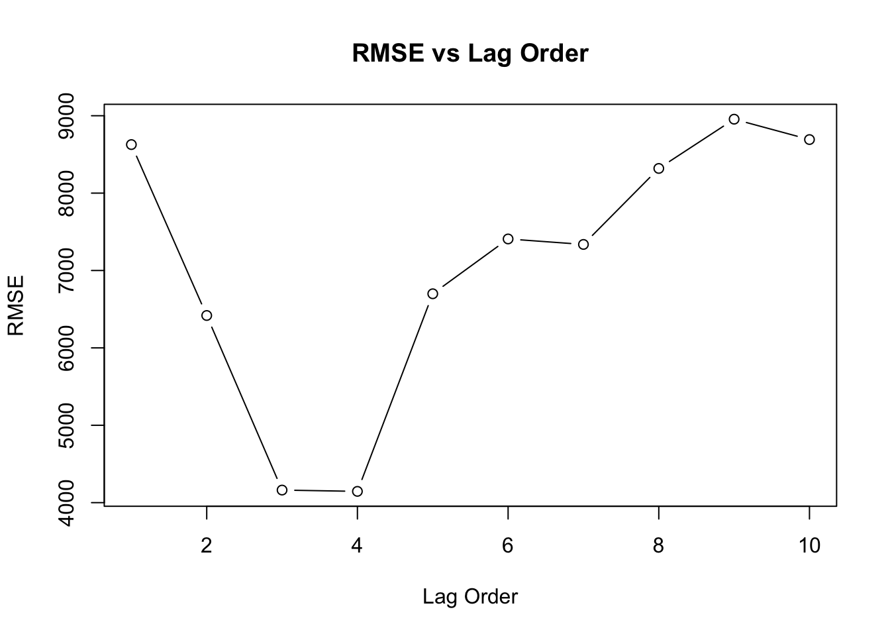
Because VAR(4) has the lowest RMSE, it indicates that it might generalize better when making predictions, despite not fitting the training data as closely as VAR(10). My primary goal is forecasting, the model with the lower RMSE might be preferable, as it indicates better predictive performance. Besides, a model with too many lags might overfit the historical data, leading to poorer performance on new data. The lower RMSE of VAR(4) could suggest it is less prone to overfitting compared to VAR(10). Therefore, I would pick VAR(4) to forecast.
fit1 <- VAR(var_data, p =4, type = "const")
autoplot(forecast(fit1, h = 60))+theme_bw()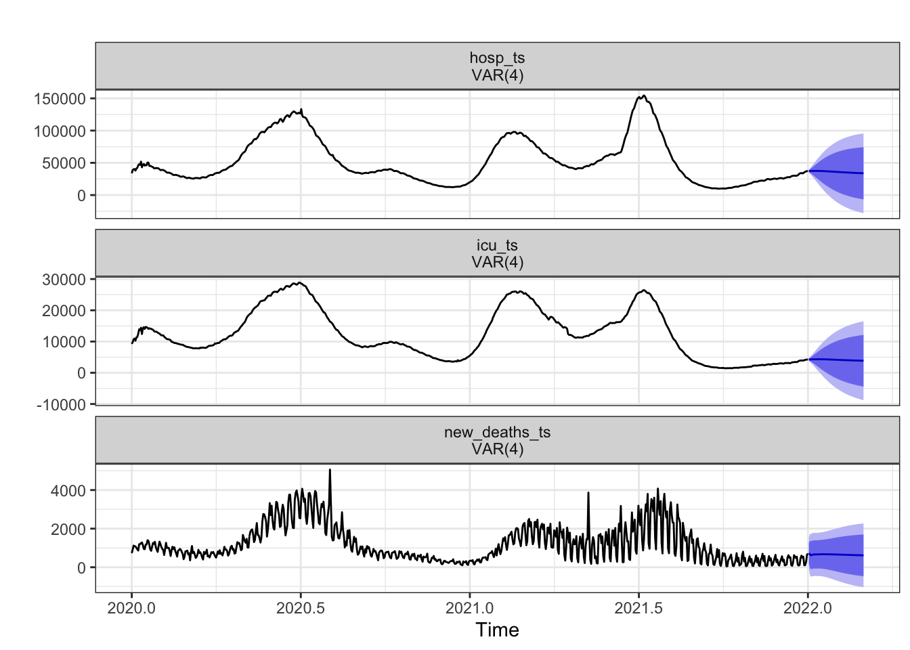
# Plot Timeseries of all 3 variables
autoplot(var_data2, facets = T) + labs(title = "Correlation Time Series Plots")+theme_bw()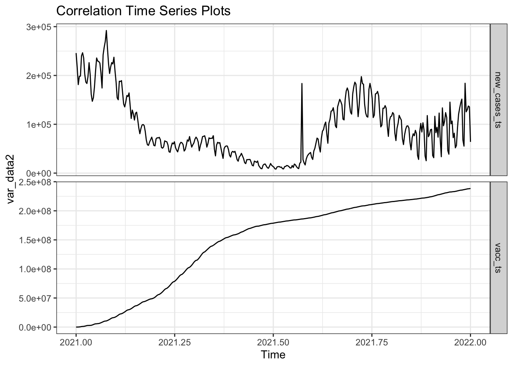
# Fit ARIMAX model
arimax_model <- auto.arima(new_cases_ts, xreg = vacc_ts)
summary(arimax_model)Series: new_cases_ts
Regression with ARIMA(3,1,2) errors
Coefficients:
ar1 ar2 ar3 ma1 ma2 xreg
0.8896 -0.5252 -0.2790 -1.3627 0.7798 -5e-04
s.e. 0.0641 0.0672 0.0713 0.0552 0.0415 6e-04
sigma^2 = 429712594: log likelihood = -4143.79
AIC=8301.57 AICc=8301.89 BIC=8328.87
Training set error measures:
ME RMSE MAE MPE MAPE MASE
Training set -105.7928 20530.32 12979.24 -4.348986 17.59038 0.07136468
ACF1
Training set -0.06542263The auto.arima function in R suggests an ARIMAX(3,1,2) model as the best fit for the data.
fit.reg <- lm(new_cases ~ people_vaccinated, data=filtered_data)
summary(fit.reg)
Call:
lm(formula = new_cases ~ people_vaccinated, data = filtered_data)
Residuals:
Min 1Q Median 3Q Max
-114533 -77412 -39840 21840 1145560
Coefficients:
Estimate Std. Error t value Pr(>|t|)
(Intercept) 1.114e+05 1.529e+04 7.284 9.07e-13 ***
people_vaccinated 3.478e-05 7.187e-05 0.484 0.629
---
Signif. codes: 0 '***' 0.001 '**' 0.01 '*' 0.05 '.' 0.1 ' ' 1
Residual standard error: 146800 on 674 degrees of freedom
Multiple R-squared: 0.0003474, Adjusted R-squared: -0.001136
F-statistic: 0.2342 on 1 and 674 DF, p-value: 0.6286ggAcf(residuals(fit.reg))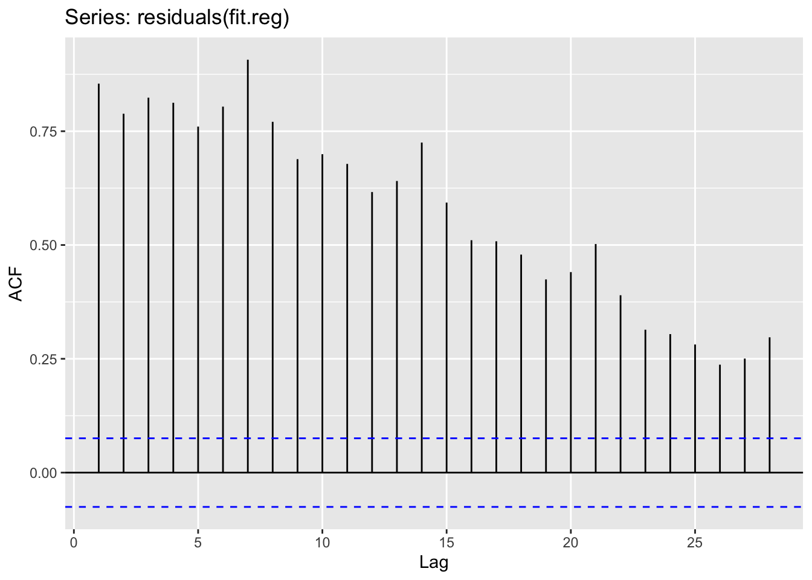
ggPacf(residuals(fit.reg))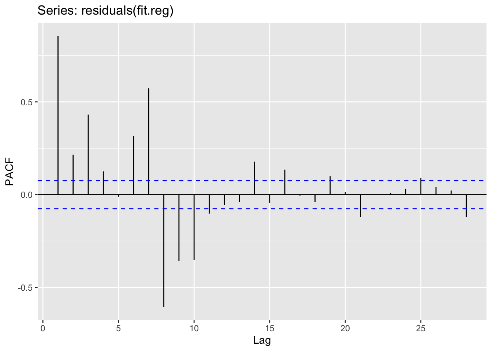
ggAcf(residuals(fit.reg) %>% diff())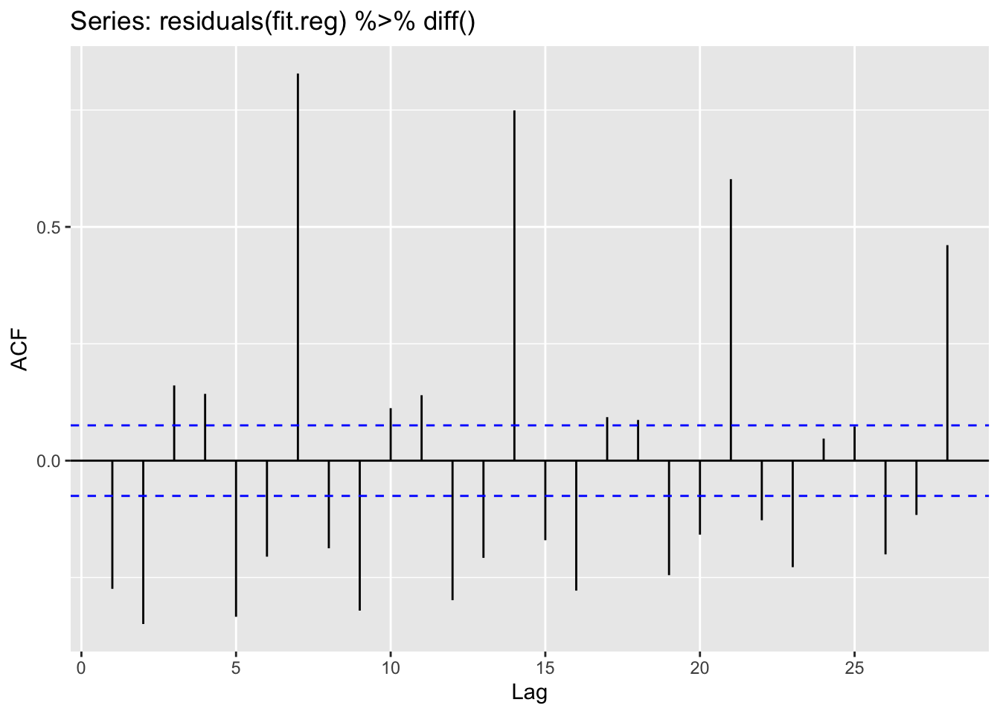
ggPacf(residuals(fit.reg) %>% diff())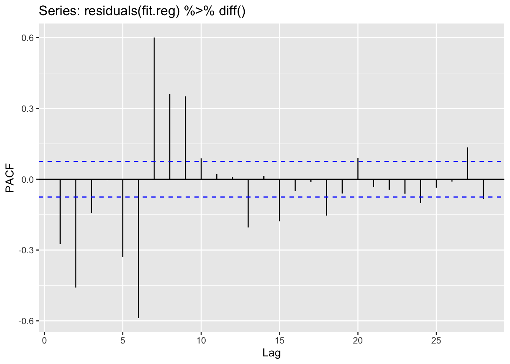
Finding the model parameters.
d=1
i=1
temp= data.frame()
ls=matrix(rep(NA,6*12),nrow=12) # roughly nrow = 3x4x1
for (p in 1:4) # p=0,1,2,3
{
for(q in 1:3) # q=0,1,2
{
for(d in 1) # d=1
{
if(p-1+d+q-1<=8)
{
model<- Arima(new_deaths_ts,order=c(p-1,d,q-1))
ls[i,]= c(p-1,d,q-1,model$aic,model$bic,model$aicc)
i=i+1
#print(i)
}
}
}
}
temp= as.data.frame(ls)
names(temp)= c("p","d","q","AIC","BIC","AICc")
#temp
temp <- temp[order(temp$BIC, decreasing = FALSE),]
knitr::kable(temp)| p | d | q | AIC | BIC | AICc | |
|---|---|---|---|---|---|---|
| 12 | 3 | 1 | 2 | 10848.65 | 10876.21 | 10848.77 |
| 9 | 2 | 1 | 2 | 10853.64 | 10876.60 | 10853.72 |
| 11 | 3 | 1 | 1 | 10961.86 | 10984.83 | 10961.95 |
| 8 | 2 | 1 | 1 | 10978.49 | 10996.87 | 10978.55 |
| 3 | 0 | 1 | 2 | 11027.00 | 11040.78 | 11027.04 |
| 6 | 1 | 1 | 2 | 11026.77 | 11045.14 | 11026.83 |
| 5 | 1 | 1 | 1 | 11097.38 | 11111.16 | 11097.41 |
| 10 | 3 | 1 | 0 | 11152.25 | 11170.63 | 11152.31 |
| 7 | 2 | 1 | 0 | 11173.88 | 11187.65 | 11173.91 |
| 1 | 0 | 1 | 0 | 11254.47 | 11259.07 | 11254.48 |
| 2 | 0 | 1 | 1 | 11256.19 | 11265.37 | 11256.20 |
| 4 | 1 | 1 | 0 | 11256.38 | 11265.57 | 11256.40 |
# Extract lowest AIC
temp[which.min(temp$AIC),] p d q AIC BIC AICc
12 3 1 2 10848.65 10876.21 10848.77# Extract lowest BIC
temp[which.min(temp$BIC),] p d q AIC BIC AICc
12 3 1 2 10848.65 10876.21 10848.77# Extract lowest AICc
temp[which.min(temp$AICc),] p d q AIC BIC AICc
12 3 1 2 10848.65 10876.21 10848.77Both give us the same results: ARIMA(3,1,2) is the best model.
fit <- Arima(new_cases_ts,order=c(3,1,2),xreg=vacc_ts)
summary(fit)Series: new_cases_ts
Regression with ARIMA(3,1,2) errors
Coefficients:
ar1 ar2 ar3 ma1 ma2 xreg
0.8896 -0.5252 -0.2790 -1.3627 0.7798 -5e-04
s.e. 0.0641 0.0672 0.0713 0.0552 0.0415 6e-04
sigma^2 = 429712594: log likelihood = -4143.79
AIC=8301.57 AICc=8301.89 BIC=8328.87
Training set error measures:
ME RMSE MAE MPE MAPE MASE
Training set -105.7928 20530.32 12979.24 -4.348986 17.59038 0.07136468
ACF1
Training set -0.06542263checkresiduals(fit)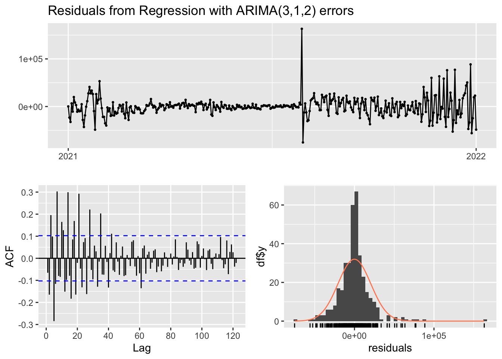
Ljung-Box test
data: Residuals from Regression with ARIMA(3,1,2) errors
Q* = 375.72, df = 68, p-value < 2.2e-16
Model df: 5. Total lags used: 73fcast_cases = forecast(fit, xreg = vacc_ts, h = 30)
autoplot(fcast_cases) + xlab("Date")+ylab("New Cases")+ggtitle("Predictions")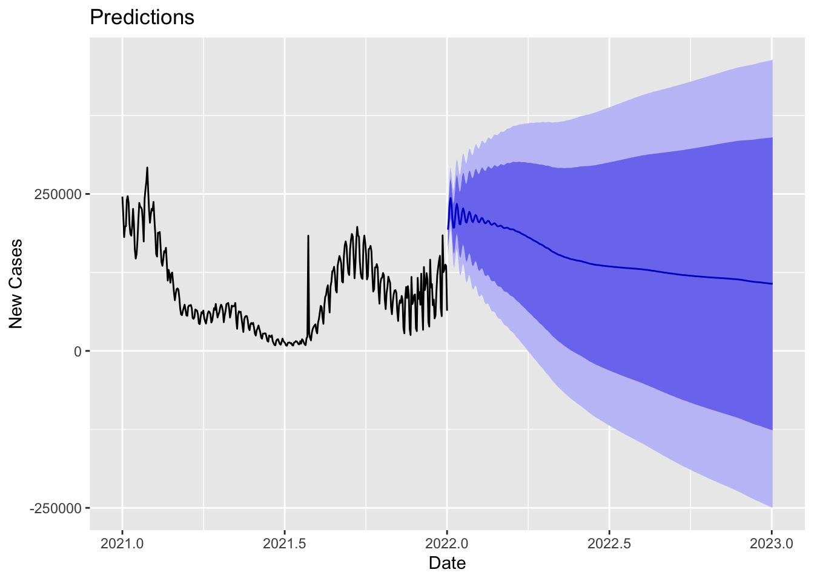